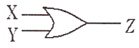
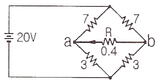
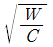
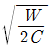
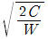
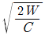
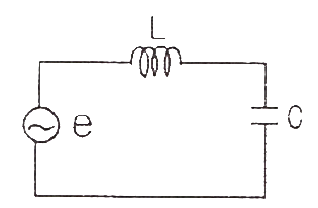
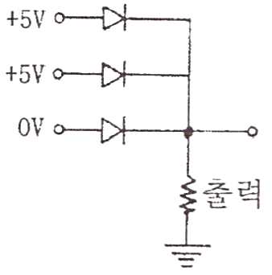
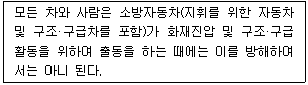
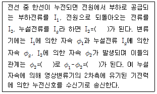

소방설비산업기사(전기) (2014-03-02 기출문제)
1과목: 소방원론
1. 건축물의 방화계획에서 공간적 대응에 해당하지 않는 것은?
- 특별피난계단
- 옥내소화전설비
- 직통계단
- 반화구획
(정답률: 85%)

2. 다음 중 인화점이 가장 낮은 물질은?
- 등유
- 아세톤
- 경유
- 아세트산
(정답률: 74%)
3. 화재시 연소물의 온도를 일정 온도 이하로 낮추어 소화하는 방법은?
- 질식소화
- 냉각소화
- 제거소화
- 희석소화
(정답률: 92%)
4. 대체 소화약제의 물리적 특성을 나타내는 용어 중 지구 온난화 지수를 나타내는 약어는?
- ODP
- GWP
- LOAEL
- NOAEL
(정답률: 82%)
5. 위험물안전관리법령에서 정한 제5류 위험물의 대표적인 성질에 해당하는 것은?
- 산화성
- 자연발화성
- 자기반응성
- 가연성
(정답률: 83%)
6. Halon 1301에서 숫자 “0”은 무슨 원소가 없다는 것을 뜻하는가?
- 탄소
- 수소
- 불소
- 염소
(정답률: 82%)
7. 분말소화약제의 주성분인 탄산수소나트륨이 열과 반응하여 생기는 가스는?
- 일산화탄소
- 수소
- 이산화탄소
- 질소
(정답률: 62%)
8. 연소의 3대 요소가 아닌 것은?
- 열
- 산소
- 연료
- 습도
(정답률: 90%)
9. 물의 소화효과를 가장 옳게 나열한 것은?
- 냉각효과, 촉매효과
- 질식효과, 촉매효과
- 냉각효과, 질식효과
- 냉각효과, 질식효과, 촉매효과
(정답률: 91%)
10. 기체상태의 Halon 1301은 공기보다 약 몇 배 무거운가? (단, 공기는 79%의 질소, 21%의 산소로만 구성되어 있다.)
- 4.⑤배
- 5.17배
- 6.12배
- 7.01배
(정답률: 69%)
11. 화씨온도 122℉는 섭씨온도 몇 ℃ 인가?
- 40
- 50
- 60
- 70
(정답률: 85%)
12. 공기 중 위험도 값(H)이 가장 작은 것은?
- 디에틸에테르
- 수소
- 에틸렌
- 프로판
(정답률: 59%)
13. 하론 1301소화약제와 이산화탄소소화약제는 소화기에 충전되어 있을 때 어떤 상태로 보존되고 있는가?
- 하론1301 : 기체, 이산화탄소 : 고체
- 하론1301 : 기체, 이산화탄소 : 기체
- 하론1301 : 액체, 이산화탄소 : 기체
- 하론1301 : 액체, 이산화탄소 : 액체
(정답률: 67%)
14. 다음 중 증기비중이 가장 큰 물질은?
- CH4
- CO
- C6H6
- SO2
(정답률: 80%)
15. 용기 내 경유가 연소하는 형태는?
- 증발연소
- 자기연소
- 표면연소
- 훈소연소
(정답률: 80%)
16. 다음 중 위험물안전관리법령상 산화성고체 위험물에 해당하지 않는 것은?
- 과염소산
- 질산칼륨
- 아염소산나트륨
- 과산화바륨
(정답률: 61%)
17. 보통 화재에서 눈부신 백색(휘백색)불꽃의 온도는 몇 ℃정도인가?
- 600℃
- 900℃
- 1200℃
- 1500℃
(정답률: 86%)
18. 다음 중 할로겐화합물 소화약제를 청정소화약제로 대체하는 주된 이유로 가장 올바른 것은?
- 화재 후 잔재의 처리가 쉽다.
- 오존층의 파괴효과가 적다.
- 냄새가 거의 없다.
- 화재를 초기에 진압하기 쉽다.
(정답률: 81%)
19. 일반적인 소방대상물에 따른 화재의 분류로 적합하지 않은 것은?
- 일반화재 : A급
- 유류화재 : B급
- 전기화재 : C급
- 특수가연물화재 : D급
(정답률: 94%)
20. 위험물안전관리법령상 제4류 위험물의 일반적인 특성이 아닌 것은?
- 인화가 용이한 액체이다.
- 대부분의 증기는 공기보다 가볍다.
- 물보다 가볍고 물에 녹지 않는 것이 많다.
- 대부분 유기화합물질이다.
(정답률: 66%)
2과목: 소방전기회로
21. 대전에 의해서 물체가 가지는 전기 또는 전기량을 무엇이라 하는가?
- 전압
- 전하
- 전류
- 저항
(정답률: 77%)
22. 2차 전압이 220V인 옥내 변전소에서 스프링클러설비의 수신반에 전기를 공급하고 있다. 스프링클러 수신반의 수전 전압이 216V인 경우 변전소에서 수신반까지의 전압 강하율은 몇 %인가?(오류 신고가 접수된 문제입니다. 반드시 정답과 해설을 확인하시기 바랍니다.)
- 1.74
- 1.79
- 1.82
- 1.85
(정답률: 23%)
23. 전류에 의한 자계의 세기를 구하는 법칙은?
- 플레밍의 오른손 법칙
- 비오-사바르의 법칙
- 앙페르의 오른손 법칙
- 렌츠의 법칙
(정답률: 58%)
24. 서보전동기에 필요한 특징을 설명한 것으로 옳지 않은 것은?
- 정·역회전이 가능하여야 한다.
- 직류용은 없고 교류용만 있다.
- 저속이며 거침없는 운전이 가능하여야 한다.
- 급가속, 급감속이 쉬워야 한다.
(정답률: 83%)
25. 내부저항이 0.2 Ω인 건전지 5개를 직렬로 접속하고, 이것을 한 조로 하여 5조 병렬로 접속하면 합성내부저항은?
- 0.1 Ω
- 0.2 Ω
- 1 Ω
- 2 Ω
(정답률: 74%)
26. 저항 10Ω, 유도 리액턴스 8Ω, 용량 리액턴스 20Ω이 병렬로 접속된 회로에 80V의 교류 전압을 가할 때 흐르는 전전류는?
- 20 A
- 15 A
- 10 A
- 5 A
(정답률: 57%)
27. 다음 그림과 같은 논리회로는?

- NOT 회로
- NAND 회로
- OR 회로
- AND 회로
(정답률: 76%)
28. 다음 회로에서 저항 R에 흐르는 전류는? (단, 저항의 단위는 모두 Ω 이다.)

- 2.15 A
- 1.42 A
- 0.7 A
- 0 A
(정답률: 74%)
29. 피드백 제어계에서 꼭 있어야 할 장치는?
- 입력과 출력을 비교하는 장치
- 안정도를 증진시키는 장치
- 응답속도를 빠르게 하는 장치
- 시간적인 지연을 갖는 장치
(정답률: 81%)
30. 유도전동기에 인가되는 전압과 주파수를 동시에 변화시켜 직류 전동기와 동등한 제어성능을 얻을 수 있는 방식은?
- 가변전압 가변주파수 제어
- 교류 귀환제어
- 교류 1단제어
- 교류 2단제어
(정답률: 80%)
31. 정전용량 C (F)의 콘덴서에 W (J)의 에너지를 축적하려면 인가전압은 몇 V 인가?




(정답률: 66%)
32. 전기량 10 C 은 몇 Ah 인가?
- 1/60
- 60
- 360
- 1/360
(정답률: 60%)
33. 전계 내에서 단위 정전하에 작용하는 힘을 정의한 것은?
- 전력의 세기
- 전위의 세기
- 전속밀도
- 전계의 세기
(정답률: 69%)
34. 그림과 같은 회로의 공진조건은?

- 1/ωL=ωC+1
- ωL=ωC
- ωL=1/ωC
- ω2C=1/ω2L
(정답률: 67%)
35. 전압 E=10+j5 V, 전류 I=5+j2 A일 때 소비전력 P와 무효전력 Q는 각각 얼마인가?
- P=15W, Q=7 Var
- P=20W, Q=50 Var
- P=50W, Q=15 Var
- P=60W, Q=5 Var
(정답률: 51%)
36. 인덕턴스가 각각 5H, 3H인 두 코일을 같은 방향으로 직렬로 연결하고 인덕턴스를 측정한 결과 15H이었다. 두 코일간의 상호 인덕턴스는 몇 H인가?
- 15
- 2.5
- 3.5
- 4.5
(정답률: 57%)
37. 그림과 같은 다이오드 게이트회로에서 출력전압은 약 몇 V인가? (단, 다이오드내의 전압강하는 무시한다.)

- 0 V
- 5 V
- 10 V
- 20 V
(정답률: 80%)
38. 정격 500W 전열기에 정격전압의 80%를 인가하면 전력은?
- 320 W
- 400 W
- 560 W
- 620 W
(정답률: 66%)
39. 공업공정의 상태량을 제어량으로 하는 제어는?
- 프로세서제어
- 프로그램제어
- 비율제어
- 정치제어
(정답률: 70%)
40. 실리콘 정류기 특징으로 틀린 것은?
- 역내전압이 크다.
- 허용온도가 높다.
- 정류비가 크다.
- 전압강하가 크다.
(정답률: 64%)
3과목: 소방관계법규
41. 점포에서 위험물을 용기에 담아 판매하기 위하여 지정수량의 40배 이하의 위험물을 취급하는 장소는?
- 일반취급소
- 주유취급소
- 판매취급소
- 이송취급소
(정답률: 81%)
42. 화재, 재난·재해 그 밖의 위급한 상황이 발생한 현장에 소방활동구역을 정하여 그 구역에 출입할 수 있는 사람을 제한하도록 경찰공무원에게 요청할 수 있는 사람은?
- 소방대장
- 시·도지사
- 시장·군수
- 안전행정부장관
(정답률: 77%)
43. 도급받은 소방시설공사의 일부를 하도급 하고자 할 때에는 미리 누구에게 알려야 하여야 하는가?
- 한전행정부장관
- 시·도지사
- 소방서장
- 관계인 및 발주자
(정답률: 49%)
44. 물분무등소화설비를 반드시 설치하여야 하는 특정소방대상물이 아닌 것은?
- 항공기격납고
- 연면적 600m2 이상인 주차용 건축물
- 바닥면적 300m2 이상인 전산실
- 20대 이상의 차량을 주차할 수 있는 기계실주차장치
(정답률: 49%)
45. 산화성 고체이며 제1류 위험물에 해당하는 것은?
- 황화린
- 칼륨
- 유기과산화물
- 염소산염류
(정답률: 74%)
46. 다음과 같이 화재진압의 출동을 방해한 사람에 대한 벌칙은?(관련 규정 개정전 문제로 여기서는 기존 정답인 3번을 누르면 정답 처리됩니다. 자세한 내용은 해설을 참고하세요.)

- 3백만원 이하의 벌금
- 3년 이하의 징역 또는 1천5백만원 이하의 벌금
- 5년 이하의 징역 또는 3천만원 이하의 벌금
- 10년 이하의 징역 또는 5천만원 이하의 벌금
(정답률: 75%)
47. 소방관계법에서 건축허가 등의 동의에 관한 설명으로 옳지 않은 것은?
- 사용승인에 대한 동의를 할 때에는 소방시설공사의 완공 검사증명서를 교부한 것으로는 동의를 갈음할 수 없다.
- 건축허가 등에 할 때에는 소방본부장 또는 소방서장의 동의를 받아야 하는 건축물 등의 범위를 대통령령으로 정한다.
- 건축허가 등의 권한이 있는 행정기관은 건축허가 등을 할 때 미리 그 건축물 등의 시공지 또는 소재지를 관할 하는 소방본부장 또는 소방서장의 동의를 받아야 한다.
- 용도변경의 신고를 수리(受理)할 권한이 있는 행정기관은 그 신고의 수리를 한 때에는 그 건축물 등의 시공지 또는 소재지를 관할하는 소방본부장 또는 소방서장에게 지체없이 그 사실을 알려야 한다.
(정답률: 58%)
48. 제조소 등의 위치·구조 또는 설비의 변경 없이 당해 제조소 등에서 저장하거나 취급하는 위험물의 품명·수량 또는 지정수량의 배수를 변경하고자 하는 자는 변경하고자 하는 날의 며칠 전까지 안전행정부령이 정하는 바에 따라 시·도지사에게 신고하여야 하는가?(관련 규정 개정전 문제로 여기서는 기존 정답인 3번을 누르면 정답 처리됩니다. 자세한 내용은 해설을 참고하세요.)
- 3일
- 5일
- 7일
- 14일
(정답률: 70%)
49. 특정소방대상물의 관계인 등이 관리업자로 하여금 정기적으로 자체소방점검(종합정밀점검 포함)을 한 경우 그 결과를 누구에게 보고하여야 하는가?
- 소방방재청장
- 시·도지사
- 한국소방안전협회장
- 소방본부장 또는 소방서장
(정답률: 75%)
50. 소방시설공사업자는 소방시설착공신고서의 중요한 사항이 변경된 경우에는 해당서류를 첨부하여 변경일로부터 며칠이내에 소방본부장 또는 소방서장에게 신고하여야 하는가?
- 7일
- 15일
- 21일
- 30일
(정답률: 53%)
51. 화재의 예방조치 등을 위한 옮긴 위험물 또는 물건의 보관기간은 규정에 따라 소방본부나 소방서의 게시판에 공고한 후 어느 기간까지 보관하여야 하는가?
- 공고기간 종료일 다음 날부터 5일
- 공고기간 종료일 다음 날부터 7일
- 공고기간 종료일로부터 10일
- 공고기간 종료일로부터 14일
(정답률: 62%)
52. 화재안전기준을 달리 적용하여야 하는 특수한 용도 또는 구조를 가진 특정소방대상물 중 원자력발전소, 핵폐기물 처리시설 등에 설치하지 않아도 되는 소방시설로서 옳은 것은?
- 옥내소화전설비 및 소화용수설비
- 옥내소화전설비 및 옥외소화전설비
- 스프링클러설비 및 물분무등 소화설비
- 연결송수관설비 및 연결살수설비
(정답률: 76%)
53. 소방관련법에 의한 자동화재속보설비를 반드시 설치하여야 하는 특정소방대상물로 거리가 먼 것은?
- 10층 이하의 숙박시설
- 국보로 지정된 목조 건축물
- 노유자 생활시설
- 바닥면적 500m2 이상의 층이 있는 수련시설
(정답률: 61%)
54. 소방특별조사 결과에 따른 조치명령으로 손실을 입어 손실을 보상하는 경우 그 손실을 입은 자는 누구와 손실보상을 협의하여야 하는가?
- 소방서장
- 시·도지사
- 소방본부장
- 안전행정부장관
(정답률: 83%)
55. 소방안전관리 업무를 수행하지 아니한 특정소방대상물의 관계인에 대한 벌칙기준은?
- 200만원 이하의 과태료
- 100만원 이하의 과태료
- 300만원 이하의 과태료
- 500만원 이하의 과태료
(정답률: 40%)
56. 소방안전교육사를 배치하지 않아도 되는 곳은?
- 소방방재청
- 한국소방안전협회
- 소방체험관
- 한국소방산업기술원
(정답률: 66%)
57. 소방관계법에 의한 무창층의 정의는 지상층 중 개구부 면적의 함계가 해당 층 바닥면적의 1/30 이하가 되는 층을 말하는데, 여기서 말하는 개구부의 요건으로 틀린 것은?
- 크기는 지름 50㎝ 이상의 원이 내접(內接)할 수 있는 크기일 것
- 도로 또는 차량이 진입할 수 있는 빈터를 향할 것
- 해당 층의 바닥면으로부터 개구부 밑부분까지의 높이가 1.5m 이내일 것
- 화재 시 건축물로부터 쉽게 피난할 수 있도록 창살이나 그 밖의 장애물이 설치되지 아니할 것
(정답률: 63%)
58. 2급 소방안전관리대상물의 소방안전관리자로 선임할 수 있는 사람으로 옳지 않은 것은?
- 산업안전기사 자격을 가진 사람
- 건설기계기사 자격을 가진 사람
- 소방공무원으로 3년 이상 근무한 경력이 있는 사람
- 의용소방대원으로 3년 이상 근무한 경력이 있는 사람으로 소방방재청장이 실시하는 2급 소방안전관리대상물의 소방안전관리에 관한 시험에 합격한 사람
(정답률: 76%)
59. 소방용수시설의 설치기준에서 급수탑 개폐밸브의 지상으로부터 설치 높이는?
- 1.5m 이상 1.7m 이하의 위치에 설치
- 1.5m 이상 2.0m 이하의 위치에 설치
- 2.0m 이상 2.5m 이하의 위치에 설치
- 2.0m 이상 3.0m 이하의 위치에 설치
(정답률: 75%)
60. 소방안전관리대상물의 관계인은 특정소방대상물의 근무자 및 거주자에 대한 소방훈련과 교육을 실시하였을 때에는 그 실시 결과를 소방훈련·교육 실시 결과 기록부에 기록하고, 이를 몇 년간 보관하여야 하는가?
- 1년
- 2년
- 3년
- 4년
(정답률: 82%)
4과목: 소방전기시설의 구조 및 원리
61. 비상콘센트의 플러그접속기는 단상 교류 220V의 것에 있어서 어떤 것을 사용하여야 하는가?
- 비접지형 2극 플러그접속기
- 접지형 2극 플러그접속기
- 비접지형 3극 플러그접속기
- 접지형 4극 플러그접속기
(정답률: 76%)
62. 비상벨설비의 발신기 설치기준으로 옳은 것은?
- 조작스위치는 바닥으로부터 0.5m 이상 1.5m 이하의 높이에 설치하여야 한다.
- 발신기의 위치표시등은 함의 중심부에 설치하여야 한다.
- 특정소방대상물의 층마다 설치하되, 각 부분으로부터 하나의 발신기까지의 수평거리가 20m 이하가 되도록 하여야 한다.
- 복도 또는 별도로 구획된 실로서 보행거리가 40m 이상일 경우에는 추가로 설치하여야 한다.
(정답률: 61%)
63. 누전경보기의 전원설치 기준에 대한 설명 중 틀린 것은?
- 전원은 분전반으로부터 전용회로로 할 것
- 각극에 개폐기 및 15A이하의 과전류차단기를 설치할 것
- 전원을 분지할 때는 다른 차단기에 따라 전원이 연동되어 차단되도록 설치할 것
- 전원의 개폐기에는 누전경보기임을 표시한 표지를 할 것
(정답률: 79%)
64. 대형 피난구 유도등을 설치하지 않아도 되는 설치장소는 다음 중 어느 곳인가?
- 공연장
- 집회장
- 오피스텔
- 운동시설
(정답률: 76%)
65. 비상콘센트설비에서 고압수전인 경우 상용전원회로의 배선은 어디에서 분기하여 설치하여야 하는가?
- 인입개폐기의 직전에서 분기하여 전용배선으로 할 것
- 인입개폐기의 직후에서 분기하여 전용배선으로 할 것
- 전력용변압기 2차측의 주차단기 1차측에서 분기하여 전용배선으로 할 것
- 전력용변압기 1차측의 주차단기 2차측에서 분기하여 전용배선으로 할 것
(정답률: 56%)
66. 자동화재탐지설비의 수신기에 대한 설명으로 적절하지 않는 것은?
- 3층 이상의 특정소방대상물에는 발신기와 전화통화가 가능한 수신기를 설치할 것
- 수위실 등 상시 사람이 근무하는 장소에 설치할 것
- 하나의 특정소방대상물에 2이상의 수신기를 설치하는 경우 화재발생 상황을 각 수신기마다 확인할 수 있도록 할 것
- 하나의 경계구역은 하나의 표시등 또는 하나의 문자로 표시되도록 할 것
(정답률: 66%)
67. 단상 2선식 교류회로에서 누전이 발생되어 누설전류가 발생한 경우 이를 검출하기 위해 영상변류기가 설치되어 있다. 누설전류 검출과정을 설명한 다음 ( )안의 알맞은 내용을 순서대로 나열한 것은?

- I1-Ig, ø1-øg, øg
- I1+Ig, ø1-øg, 0
- I1-Ig, ø1+øg, øg
- I1+Ig, ø1+øg, 0
(정답률: 55%)
68. 무선통신보조설비에 사용되는 증폭기의 비상전원 용량은 무선통신보조설비를 유효하게 몇 분 이상 작동시킬 수 있는 것으로 하여야 하는가?
- 10분
- 20분
- 30분
- 60분
(정답률: 62%)
69. 누전경보기 중 1급 누전경보기는 경계전로의 정격전류가 몇 A를 초과하는 전로에 설치하는가?
- 50
- 60
- 100
- 120
(정답률: 77%)
70. 자동화재속보설비의 스위치 설치위치는 바닥으로부터 몇 m 높이에 설치하여야 하는가?
- 0.5m 이상 1.0m 이하
- 0.8m 이상 1.5m 이하
- 1.0m 이상 1.8m 이하
- 1.2m 이상 2.0m 이하
(정답률: 87%)
71. 연기가 다량으로 유입할 우려가 있는 장소에 적합하지 않은 감지기는?
- 광전식아날로그식 스포트형감지기
- 열아날로그식 감지기
- 보상식 스포트형감지기
- 차동식 스포트형감지기
(정답률: 54%)
72. 지하층으로서 지표면으로부터 깊이가 몇 m 이하인 경우 해당 층에 한하여 무선통신보조설비를 설치하지 않아도 되는가?
- 1
- 2
- 3
- 4
(정답률: 68%)
73. 비상방송설비의 설치기준에 대한 설명으로 옳은 것은?
- 실내 황성기의 음성입력은 최소 5W 이상일 것
- 확성기는 각 층마다 설치할 것
- 음량조정기를 설치하는 경우 음량조정기의 배선은 2선식 이상으로 할 것
- 다른 방송설비와 공용하는 것에서는 화재 시 비상경보를 포함한 모든 방송을 차단할 수 있는 구조로 할 것
(정답률: 72%)
74. 비상방송설비에서 기동장치에 따른 화재신호를 수신한 후 음량으로 화재발생상황 및 피난에 유효한 방송이 자동으로 개시될 때까지의 소요시간으로 알맞은 것은?
- 5초 이하
- 10초 이하
- 20초 이하
- 30초 이하
(정답률: 79%)
75. 자동화재탐지설비의 경계구역은 하나의 경계구역이 2개 이상의 층에 미치지 아니하도록 하여야 하나 몇 m2 이하에서는 2개의 층을 하나의 경계구역으로 할 수 있는가?
- 400m2 이하
- 500m2 이하
- 600m2 이하
- 700m2 이하
(정답률: 62%)
76. 단독경보형감지기의 설치기준에 대한 설명으로 옳지 않은 것은?
- 각 실마다 설치하되, 바닥면적 100m2 초과하는 경우 100m2 마다 1개 이상 설치할 것
- 최상층의 계단실의 천장에 설치할 것
- 건전지를 주전원으로 하는 경우 정상적인 작동상태를 유지할 수 있도록 건전지를 교환할 것
- 상용전원을 주전원으로 하는 경우 2차 전지는 제품검사에 합격한 것을 사용할 것
(정답률: 65%)
77. 휴대용비상조명등을 설치하지 않아도 되는 특정소방대상물은?
- 숙박시설
- 청소년수련관
- 다중이용업소
- 영화상영관
(정답률: 51%)
78. 감지기회로의 도통시험을 위한 종단저항 설치기준으로 틀린 것은?
- 점검 및 관리가 쉬운 장소에 설치할 것
- 종단감지기를 설치할 경우에는 구별이 쉽도록 해당감지기의 기판 및 감지기 외부 등에 별도의 표시를 할 것
- 종단저항은 감지기회로의 중간부분에 설치할 것
- 전용함을 설치하는 경우 그 설치높이는 바닥으로부터 1.5m 이내로 할 것
(정답률: 77%)
79. 자동화재탐지설비의 감지기 중에서 부착높이 8m 이상 15m 미만에 설치되는 감지기의 종류로 옳지 않은 것은?
- 차동식 분포형
- 불꽃감지기
- 이온화식 2종
- 보상식 스포트형
(정답률: 48%)
80. 감지기의 설치기준으로 틀린 것은?
- 정온식 감지기는 주방, 보일러실 등 다량의 화기를 취급하는 장소에 설치하되, 공칭작동온도가 최고주위온도 보다 30℃ 이상 높은 것으로 설치 할 것
- 감지기는 실내로의 공기유입구로부터 1.5m 이상 떨어진 곳에 설치할 것
- 스포트형 감지기는 45° 이상 경사되지 아니하도록 부착할 것
- 감지기는 천장 또는 반자의 옥내에 면하는 부분에 설치할 것
(정답률: 71%)